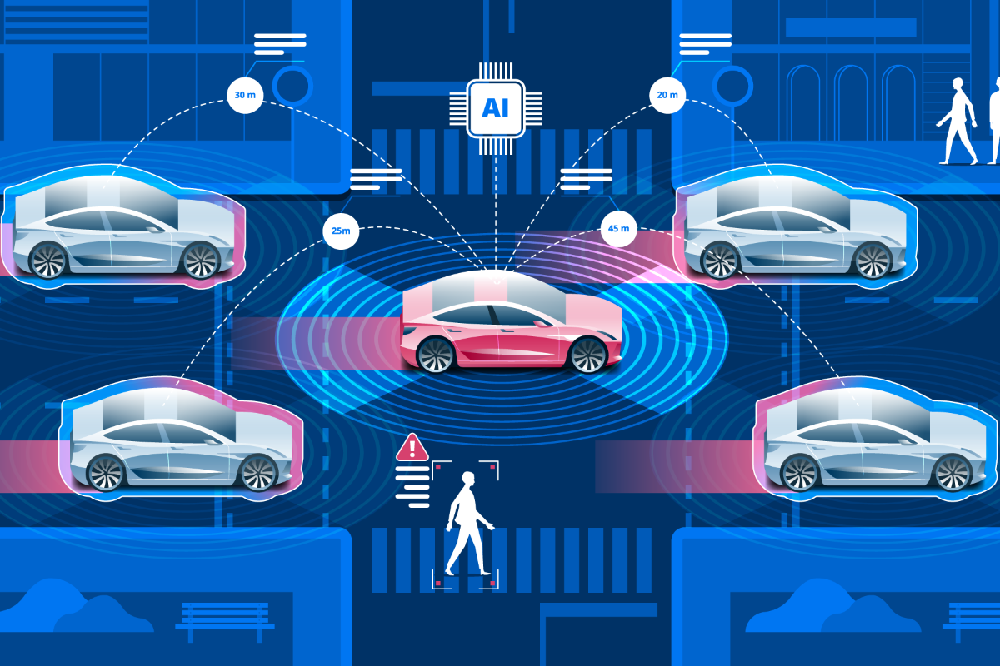

Introduction to AutoCars
AutoCars are revolutionising the automotive industry with advanced technology, electric powertrains, and autonomous driving capabilities. Companies like Tesla are leading the charge in this transformation.
Key Features of Modern AutoCars
- Parking Assistance:Helps the driver to park safely without much driver input.
- Navigation:Uses GPS and AI to find the fastest route.
- Obstacle detection:AI detects surrounding environments such as pedestrians, other vehicles or obstacles surrounding the car.
- Advanced Infotainment Systems:Providing connectivity and entertainment options for drivers and passengers.
- Sustainable Materials:Using eco-friendly materials in vehicle manufacturing.
Advantages and Disadvantages
Advantages:
- Reduces human driving errors as AI does not get tired or distracted.
- Makes travelling more convenient for long distances as the driver does not need to be constantly looking out for traffic, thus reducing the chances of fatigue.
- Helps people who cannot drive such as elderly or disabled people as they might have slower reaction time or poor eyesight etc.
Disadvantages:
- Expensive repairs such as damaged sensors and advanced computer systems can cost a lot to repair.
- Can struggle with heavy rain, floods or unclear road markings due to the lack of human judgment based on experience.
- Cybersecurity risks, hackers may gain access to the vehicle's computer systems accessing the owners personal information, GPS locations, travel records and control the vehicle causing accidents.
Conclusion
AI-powered autonomous cars can make our daily lives easier, safer and more convenient. However, they may also create challenges such as unpredictable weather conditions, high costs and cybersecurity risk. Therefore, the technology should be properly tested and regulated before people fully depend on it
Want to learn more? Check out the official Tesla Website.